Use Tracks
This section describes the use of tracks. A track is a record of the vessel’s position as it proceeds. A trail is left behind the vessel on the chart display. The record includes distance, bearing, latitude, longitude, speed and a timestamp for each waypoint recorded. Recorded tracks are managed in the tracks_tab.
Automatic Daily Tracks
At the time of day configured in Options>Ships>Own Ship>Tracks, tracking is turned off and on again automatically to ensure that the track does not span dates. The changeover time is defined as occuring at Computer time, UTC or LMT (Local Mean Time). If the timezone needs to be changed, it is a good idea to first close the OpenCPN application.
If the Automatic Daily Tracking checkbox is selected, the "Toggle Tracking" tool will turn tracking on and off. However, on turning it off, the accumulated track will be extended with the previous one if it does not extend into yesterday. Disjoint segments are kept separate. Time-adjacent segments are merged into a single track.
Assuming Automatic Daily Tracking is on, during tracking periods there will normally be two tracks visible in the Route Manager: the current track (red color track-points on the chart) and the previously accumulated track for the day. After toggling tracking off there will be just one track for this day.
Automatic Daily Tracks follow the settings in Tracking Precision
Merge
Track segments can be joined through the right-click menu when they are selected in the Tracks tab. In the example below, tracking on 2024-05-09 was toggled on after the ship left port.
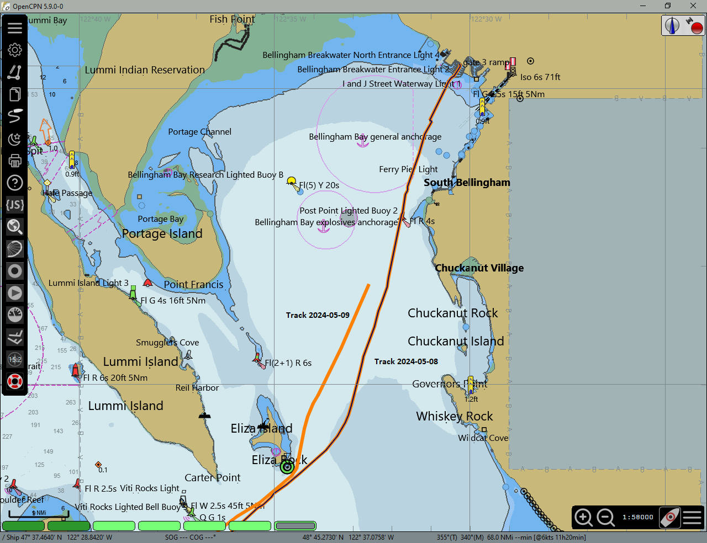
Select the two tracks and click Merge Tracks to combine them into a single track. 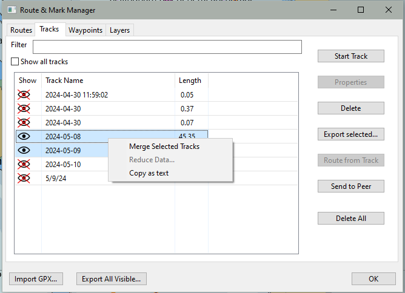
The combined track remains in the list. 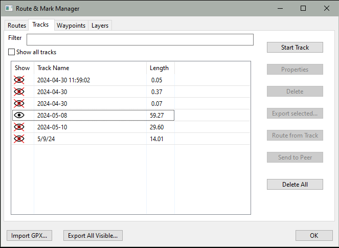
The tracks are combined into a single track. 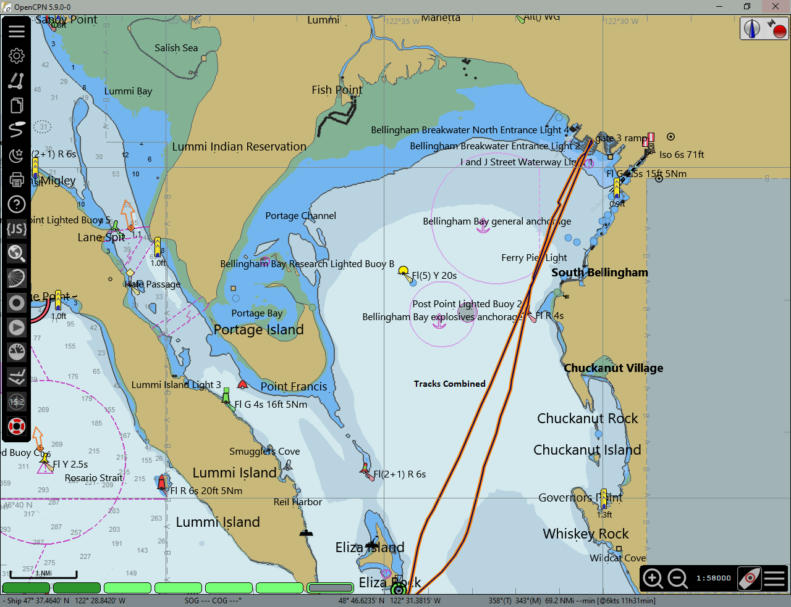
It is a good idea to export copies of your tracks before combining them.
If you have ever hit the Track icon by mistake, or closed down OpenCPN in the middle of a passage, you know that it’s very frustrating to have a voyage split up in a number of different tracks that are not joined together. This can be fixed.Just select any number of tracks in the Track tab of the Route Manager window, right click the mouse to bring up the context menu, and choose to "Merge Selected Tracks". 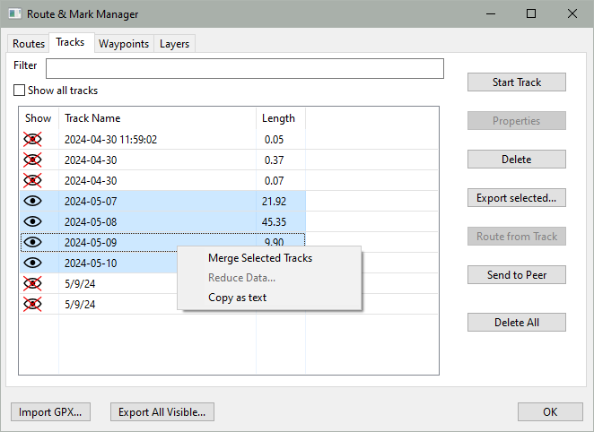
The selected tracks will be merged in chronological order, with the track properties (name, color etc) of the resulting track keeping those of the earliest track in the selection. 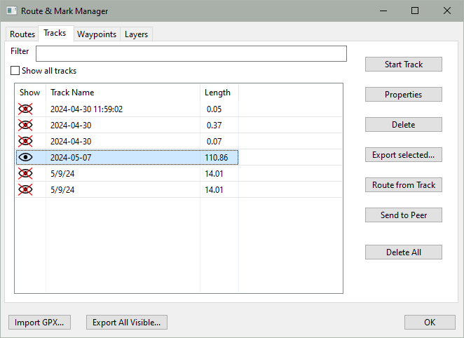
Extend Track
Creates a new, combined track by connecting the first time-stamped waypoint in the selected track with the last time-stamped waypoint in the most recent visible track in the track list. The Extend Track function deletes the first track from the Track List and appends _plus to the second, combined track.
In the example below, we will extend the track dated 2024-05-10 14:47:03 to the previous track, 2024-05-10 7:12:33.
The Track List. Click Properties to extend the selected track. 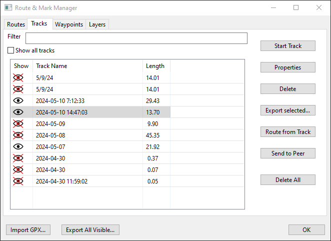
The two tracks visibile on the chart:

The Extend Track button is active. 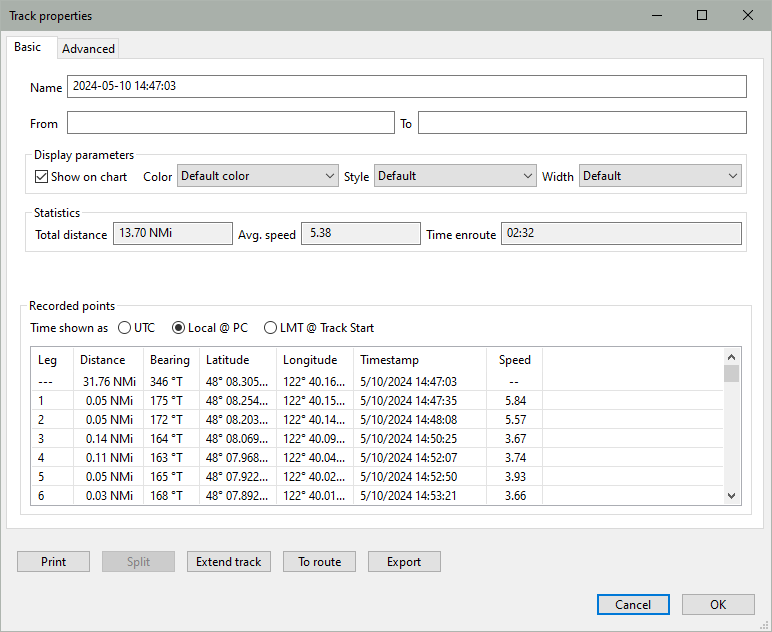
The tracks are combined. The earlier of the 2 tracks is removed from the list. The combined track is renamed with _plus appended.
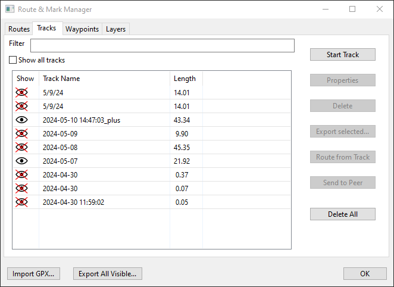
The tracks are combined on the chart. 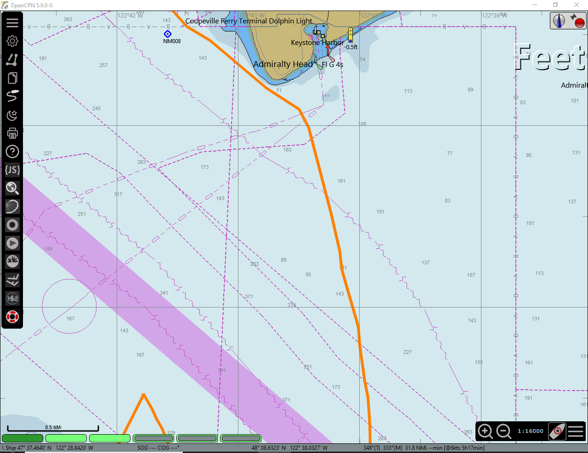
It is recommended to export and save your tracks before combining them. See Extend Track
Reduce Track Data
Do you have have massive amounts of tracks and find them bogging down OpenCPN? This feature is for you! It is available from the context menu in the Track Manager. Right click on an existing track, and then click "Reduce Data…".
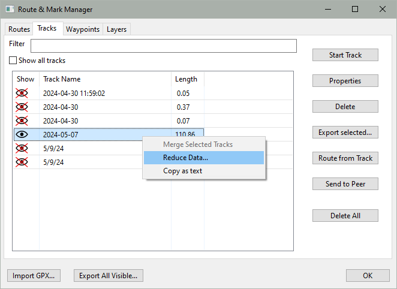
Pick one of the options, it reduces the amount of points in an existing track while maintaining the specified maximum error between the original track and the reduced track.
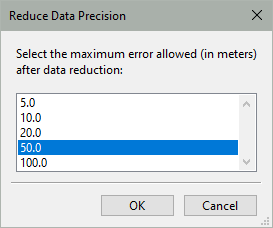
Testing on an old OpenCPN track or an imported track, with an error setting of 10 or 20 meters tracks, will, in many cases, reduce the size to less than half and one can’t really see the difference.
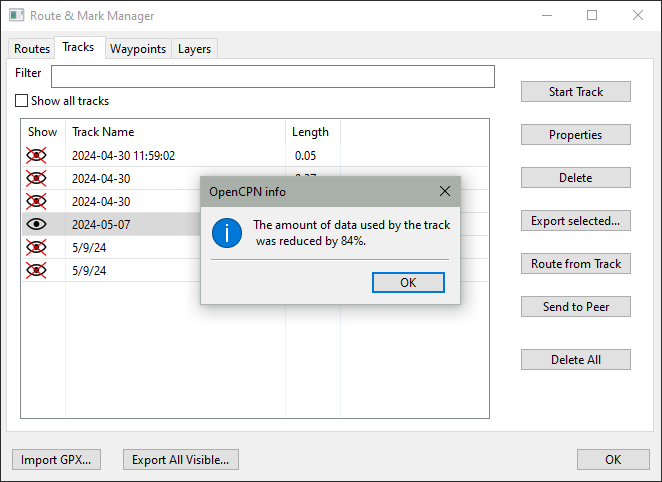
Tracks made with the new intelligent dynamic tracking available in OpenCPN will not reduce much, unless a large error is tolerated. The Tracking Precision setting in Options > Ships > Own Ship > Tracks will also affect the number of data points in a track.